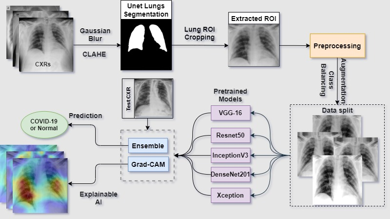
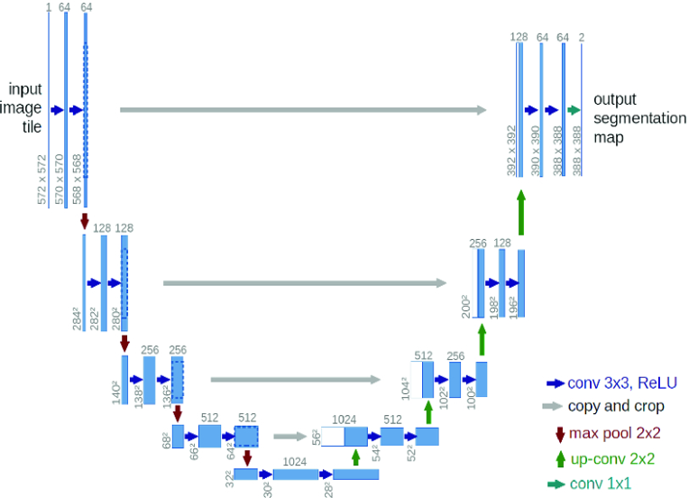
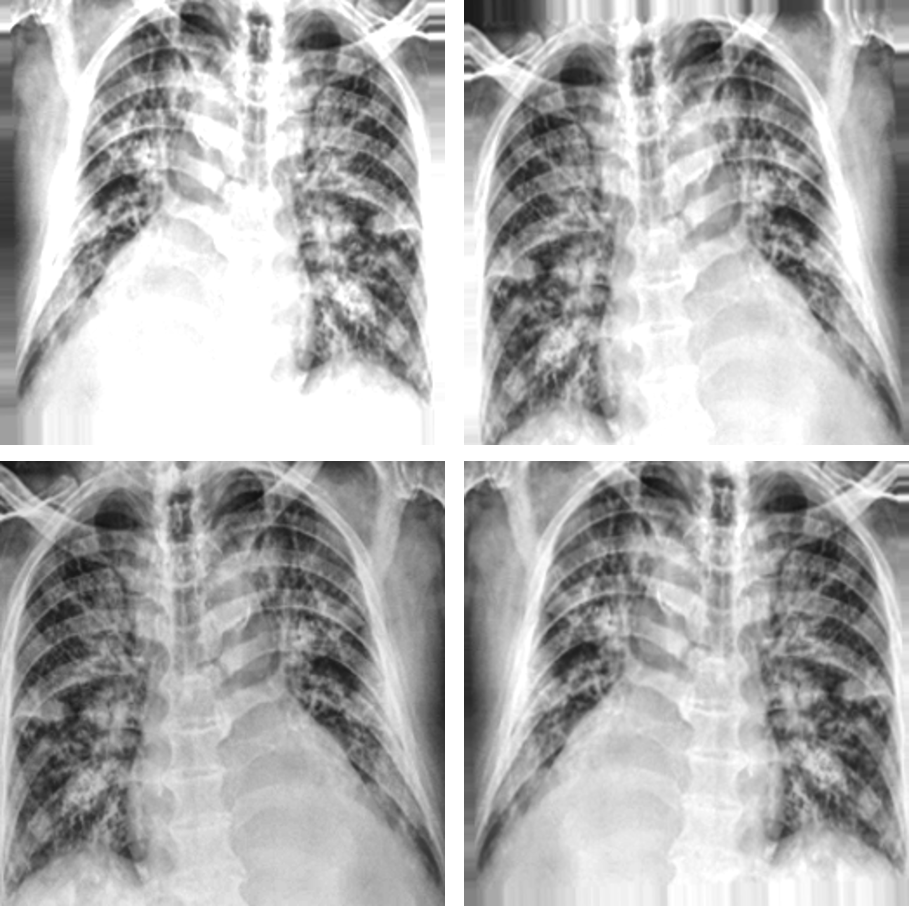
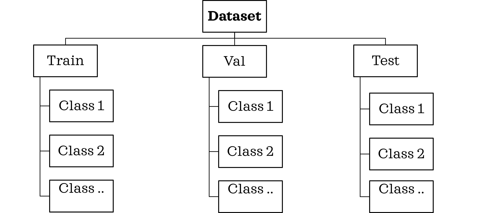
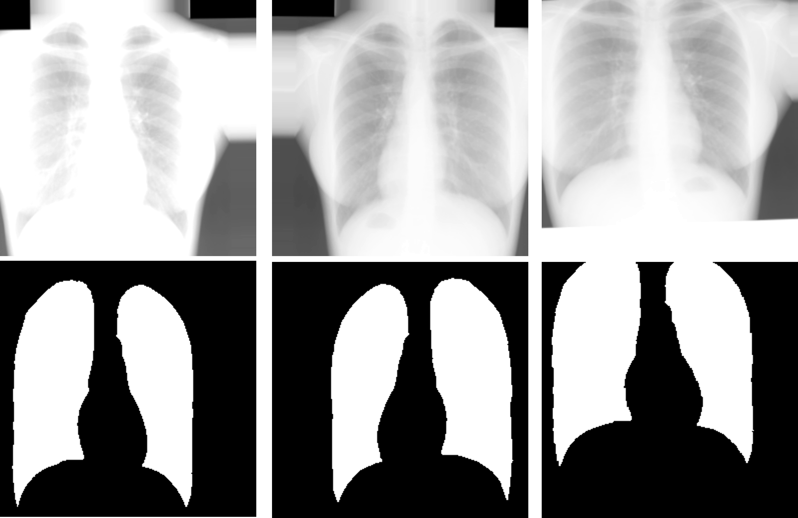
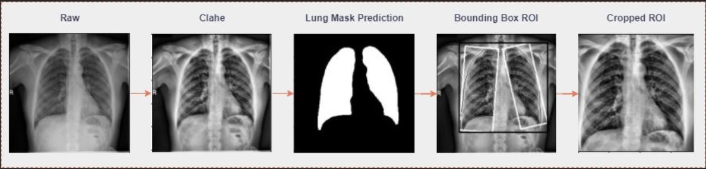
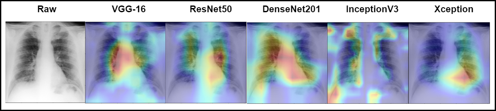

Ensemble model for Covid-19 Detection in Chest radiographs

fig 1. Workflow pipeline
Summary
In this project we developed an ensemble deep learning frame- work for detecting pulmonary manifestations of COVID-19 from chest X-rays. We incorporated lung segmentation using U-Net to identify the thoracic region of interest, further utilized to train deep learning models to learn from relevant features. Fine-tuning of selected ImageNet pre-trained deep learning models was done by learning and evaluating on publicly available CXR collections. Ensemble methods like stacked generalization, voting, averaging, and the weighted average was used to combine predictions from best-performing models. The purpose of incorporating ensemble techniques is to overcome generalization errors caused by noise and training on a limited number of data sets. Experimental evaluations concluded on significant improvement in performance using the deep fusion neural network i.e. WE-Net model which resulted in an accuracy of 99.02% and 0.989 area under the curve in detecting COVID-19 from CXRs. The combined use of image segmentation, pre-trained deep learning models, and ensemble learning resulted in improved predictions.

fig 2. Unet model architecture
Data Augmentation and pre-processing
For Unet Lung Segmentation training 941 CXRs and corresponding manual lung mask pairs from sourced from SCR database, Shenzhen and Montgomery County of NIH database. Further augmentation was performed to increase the data points for the training. After the augmentation, additional pre-processing was performed on the CXR masks, thresholding the diluted pixel back to 0 values (black). Further, the CXRs used for the segmentation model were pre-processed using CLAHE followed by gaussian blurring to mimic the COVID positive CXRs, thus enabling segmentation model to learn on abnormal CXRs.For Classification trainings, COVID-19 Radiography database from Kaggle was used consisting of 3616 Covid-19 infected CXRs and 10192 Normal labeled CXRs. As the class sizes of our data set was unbalanced which could lead to biased learning. Hence, class balancing was done to overcome overfitting by augmenting the training data, which was achieved by adding random variations in the following attributes of the images: rotations, translational shifts, zooming, shear shifts, horizontal flips, and brightness intensity changes.

fig 3. CXR Augmentations

fig 3. Training data structure

fig 4. CXR & Lung mask pair-wise augmentations
Unet lung segmentation and lung RoI extraction
For training our classification model we extracted the Lung region of interest (ROI) from the CXRs to limit our model to learn only from the Lung region of the CXRs and avoid any kind of mis-learning. For this we trained a Unet lung segmentation model using the Adam optimizer on manual lung masks and achieved test accuracy of 98.3% and IoU test score of 0.925. and image cropping. We then performed contour detection over the lung masks. A union of the fit bounding boxes around the contours was cropped, providing us ROI approximation of the thoracic cavity consisting of the lung lobes. These images were used to train our DL classification models only the relevant features, thereby aiding reliable decision-making.
fig 5. Lung RoI extraction pipeline
Transfer learning-based Classification training
We have trained 5 different model on ImageNet pre-trained CNN for architectures: VGG-16, ResNet50, DenseNet201 (DNet201), InceptionV3 (InceptV3), and Xception in our study and a final ensemble model was developed out of the whole training. The pre-trained models were fine-tuned by truncating the last convolution layer, and classifier layers are further replaced by custom build layers. We added an average pooling layer to reduce the spatial size of representation generated by previous kernels after convolution. Batch normalization has also been included in the architecture of all pre-trained models except for VGG-16. After the convolutional and pooling layers, a classification network is placed at the end of the model consisting of fully connected layers (FCLs). We have used FCL with 256 neurons with ReLU activation function followed by dropout.Ensemble model
Ensemble techniques use a combination of learning algorithms to optimize better predictive performance. They typically reduce overfitting in models and make the model more generalizable, making it unlikely to be influenced by small changes in the training data. We studied different ensemble techniques for COVID-19 case detection by combining predictions from multiple deep learning models via various ensemble strategies such as hard voting, weighted averaged voting, SVM, XG-boost and stacked generalizationAI explainability using Gradcam
While using DL models in medical image prediction problems, it’s important to understand their learned behavior, to explain the pre-dictions from these black-box models, and understand the clinical decision making. In our proposed work, we have applied a gradient-based approach called Grad-CAM, which measures the gradients of features maps in the final convolution layer on a CNN model for a target image, highlighting the critical regions that are class-discriminating saliency maps.
fig 6. GradCam results on the trained classification models
Video demonstration